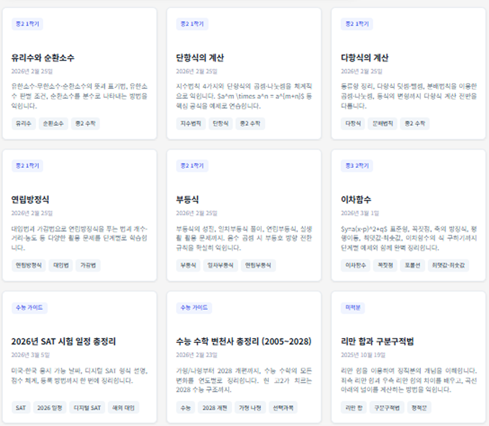
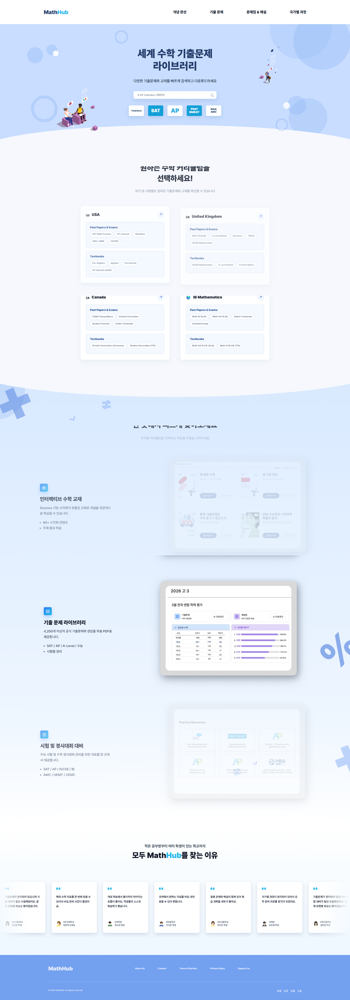
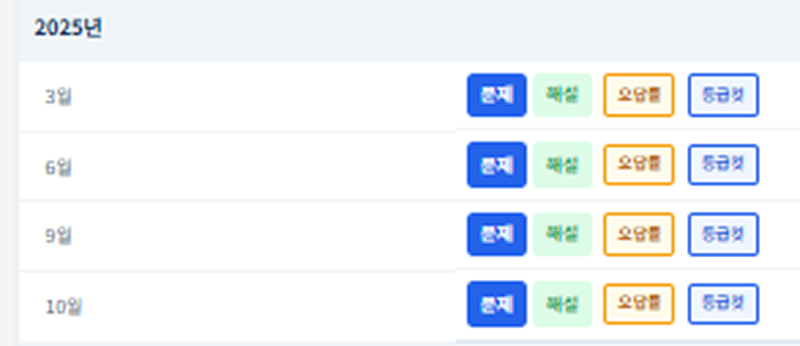
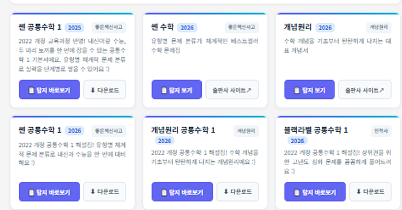
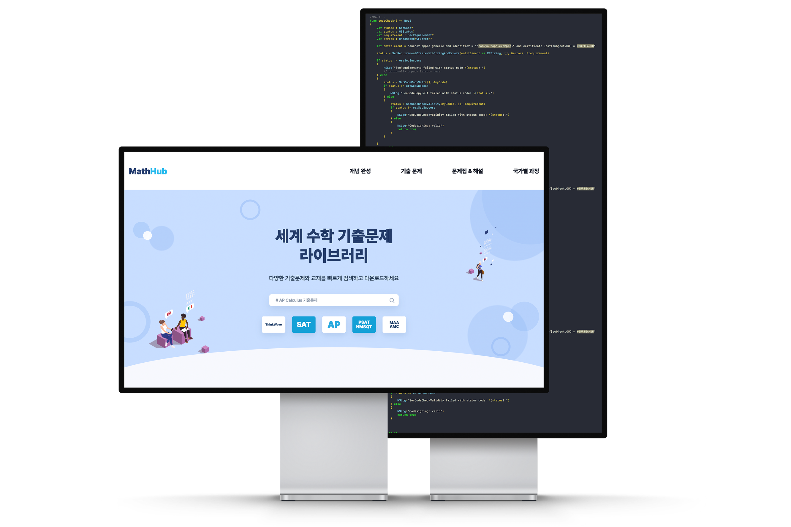
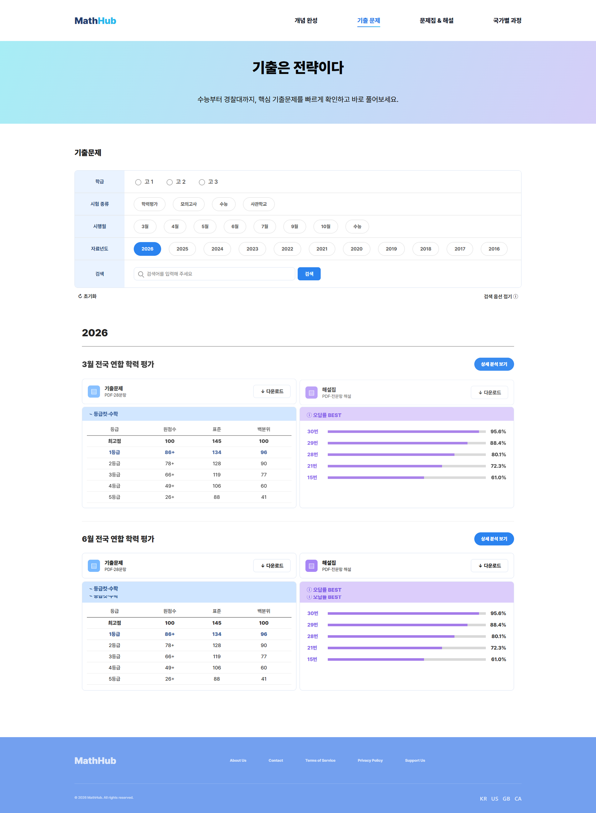
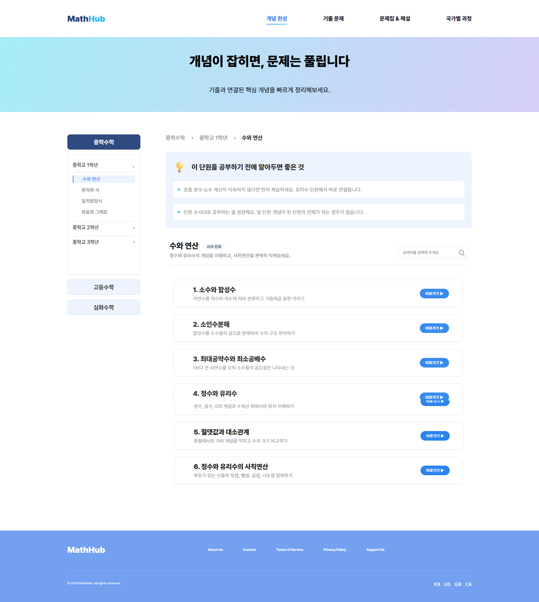
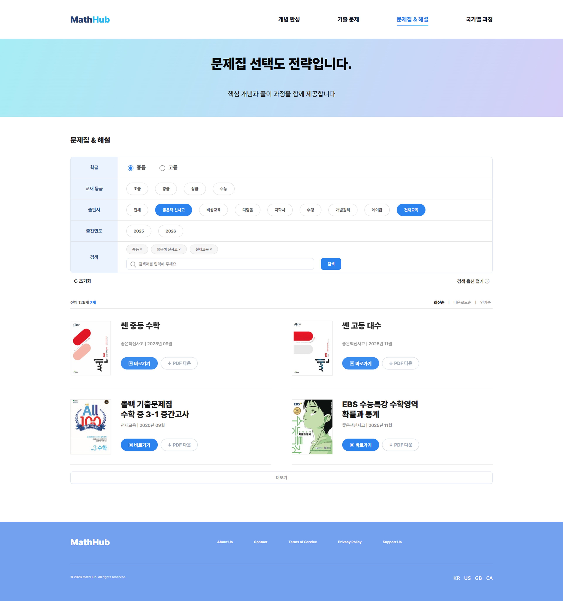
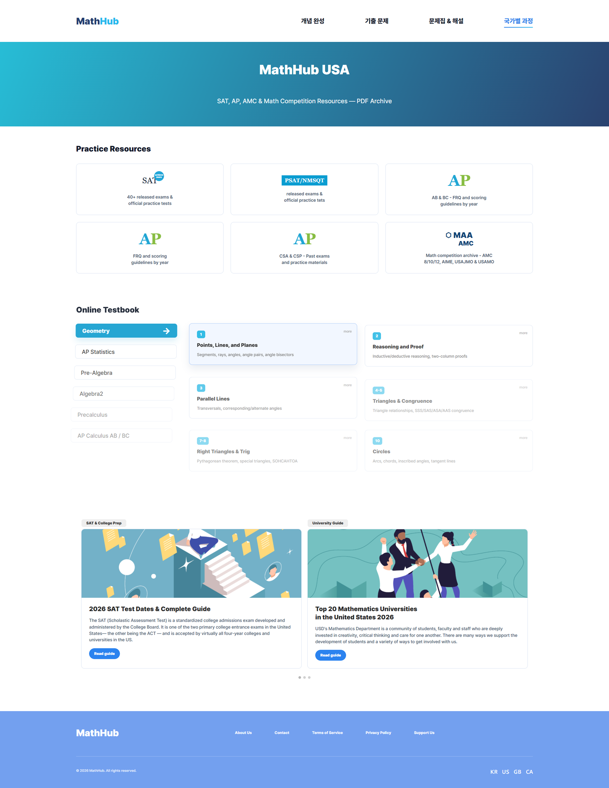

PROBLEM 01
혼합된 정보 구조
중등 · 고등 · 대학 · 해외 과정이 하나의 화면 안에 혼합되어 있어,
서비스의 정체성과 사용자의 현재 위치가 모두 불분명했다.
전 세계 수학 기출문제와 학습 자료를 한 곳에서 — 자료를 보여주는 곳에서, 학습을 시작하는 곳으로.

Overview
MathHub는 전 세계 수학 기출문제와 학습 자료를 제공하는 교육 플랫폼이다.
기존 사이트는 방대한 자료를 보유하고 있었지만,
정보 구조가 복잡하고 탐색 흐름이 정리되어 있지 않아 원하는 자료에 도달하기 어려웠다.
본 프로젝트는 자료를 단순히 ‘보여주는’ 플랫폼이 아니라,
학습을 ‘시작하기 위한’ 플랫폼으로 재설계하는 것을 목표로 진행했다.
정보 구조와 탐색, 그리고 학습 흐름까지를 하나의 경험으로 다시 연결했다.
#Research
재설계에 앞서 기존 사이트의 탐색 흐름을 직접 점검했다.
자료의 양은 충분했지만,
사용자가 ‘원하는 자료에 도달하기까지의 경험’에서 반복적인 문제가 드러났다.
원하는 자료까지의 평균 탐색 깊이
5.4회
▲ 목표 대비 +2.9회 더 많은 클릭
메인 → 카테고리 → 하위 분류 → 목록 → 상세로 이어지는 단계가 길어, 첫 화면에서 목적지를 가늠하기 어려웠다.
첫 화면에서 ‘무엇을 하는 곳인지’ 파악
38%
▼ 절반 이상이 서비스 정체성을 인지하지 못함
중등·고등·대학·해외 과정이 한 화면에 섞여 있어 ‘이 서비스가 누구를 위한 곳인지’가 분명하지 않았다.
탐색 단계별 사용자 이탈 분포
탐색구간
▲ 검색·필터 부재 구간에 이탈 집중
자료를 ‘찾는’ 탐색 구간에서 이탈이 가장 크게 발생했고, 학습으로 이어지는 흐름은 그 이전에 끊기고 있었다.
#Problem
기존 MathHub는 다양한 교육 자료를 제공하고 있었지만 정보 구조와 사용자 흐름이 체계적으로 정리되어 있지 않았다.
사용자는 첫 화면에서 현재 위치를 파악하기 어려웠고, 원하는 자료를 찾기 위해 반복적인 탐색 과정을 거쳐야 했다.

중등 · 고등 · 대학 · 해외 과정이 하나의 화면 안에 혼합되어 있어,
서비스의 정체성과 사용자의 현재 위치가 모두 불분명했다.

검색과 필터 기능이 부족해, 원하는 자료에 도달하기까지
많은 시간이 필요했다. 탐색은 곧 ‘반복 클릭’이 되었다.

개념 학습과 문제 풀이가 서로 연결되지 않아,
자료를 보는 것에서 학습이 멈췄다. 경험이 ‘흐름’이 되지 못했다.
#Solution
기존 사이트 분석을 통해 발견한 핵심 문제는 단순한 UI가 아니라 ‘구조’였다. 세 가지 문제를 각각 명확한 개선 방향으로 연결해, 재설계의 기준선을 세웠다.
Design System
교육 플랫폼 특성상 많은 정보가 한 화면에 제공되기 때문에, 디자인 시스템의 일관성이 무엇보다 중요했다. 타이포 · 컬러 · 간격 · 컴포넌트를 토큰으로 정의해 모든 페이지가 같은 규칙 위에서 작동하도록 했다.

Main Page
MathHub는 탐색 중심 서비스이기 때문에, 사용자가 가장 먼저 마주하는 행동은 ‘검색’이어야 했다.
검색창을 중심에 두고, 국가별 커리큘럼을 한눈에 선택할 수 있도록 메인을 다시 설계했다.
해시태그형 추천어와 시험 칩(SAT·AP·PSAT·AMC)을 검색창 바로 아래 배치해, 진입 즉시 탐색을 시작한다.
USA · United Kingdom · Canada · IB를 카드로 분리해, 자신에게 맞는 과정을 명확히 고른다.
Desmos 기반 시각화가 포함된 교재로 개념을 직관적으로 학습하도록 핵심 기능을 미리 보여준다.
‘모두 MathHub를 찾는 이유’ 섹션의 실제 학생·교사 후기로 플랫폼의 신뢰감을 전달한다.
Search Experience
검색창을 중심으로 빠른 탐색이 가능하도록 기출 문제 페이지의 구조를 재설계했다.
학급 · 시험 종류 · 시행월 · 자료년도를 한 화면의 필터 시스템으로 묶어, 원하는 시험지에 곧장 도달하게 했다.
스크롤 중에도 4개 핵심 메뉴가 상단에 고정되어, 탐색 중 위치를 잃지 않는다.
학급 · 시험 종류 · 시행월 · 자료년도를 한 패널에 정리해, 조건을 조합하며 탐색한다.

원점수 · 표준점수 · 백분위를 표로 정리해, 시험지의 난이도와 기준을 즉시 파악한다.
문항별 오답률을 데이터로 바로 시각화해, 어디서부터 공략해야 하는지 전략을 제시한다.
Learning Flow
기존 서비스는 자료를 ‘제공’하는 것에 집중되어 있었다.
하지만 학습 플랫폼이라면 자료를 먼저 보여주는 것에서 끝나지 않고,
개념 → 기출 → 문제집으로 이어지는 실제 학습 흐름까지 고려해야 한다고 판단했다.
중 · 고 · 심화 과정과 단원을 좌측에 고정해, 개념 사이를 자유롭게 오가며 학습한다.

단원을 시작하기 전 알아두면 좋은 선수 개념을 먼저 안내해, 학습의 진입 장벽을 낮춘다.
각 개념에 곧바로 관련 기출 문제집으로 이동해, 개념과 문제 풀이가 하나의 흐름이 된다.
Key Screens
목적 중심으로 재정의한 4개 영역 가운데, 문제집 · 해설과 국가별 과정 역시 같은 탐색 원칙 위에서 완성했다.
필터와 카드 구조로 ‘찾고 → 바로 학습’ 하는 흐름을 이어간다.
문제집 & 해설 · Workbooks & Solution

국가별 과정 · Global Curriculum

From Design to Code
디자인 작업 이후 페이지 퍼블리싱을 직접 진행했다.
검색 · 필터 로직과 인터랙션까지 구현해, 시안에 머물지 않고 ‘작동하는 서비스’ 로 완성했다.
검색 및 필터 기능 구현 — 학급·시험·연도·출판사 조건을 조합하는 다중 필터
Sticky Navigation 구축 — 스크롤 전 구간에서 위치를 유지하는 고정 헤더
GSAP 인터랙션 구현 — 등장 애니메이션과 seamless 로고 루프
반응형 대응 — 데스크톱·태블릿·모바일 레이아웃 최적화
공통 컴포넌트 구조화 — 헤더·푸터·필터·카드의 재사용 가능한 구조
Challenges & Improvements
설계를 코드로 옮기는 과정에서 마주한 기술적 문제들을, 구조를 다시 정리하며 하나씩 해결했다.
텍스트 매칭에 의존하던 필터를 data-attribute 기반으로 재구성해, 조건이 늘어나도 안정적으로 동작하도록 했다.
중첩된 타임라인이 서로 간섭하던 문제를, 루프 구조를 분리·재구현해 끊김 없는 무한 루프로 정리했다.
필터 패널과 데이터 테이블이 좁은 화면에서 무너지지 않도록, 브레이크포인트별 레이아웃을 새로 정의했다.
폰트와 스타일이 적용되기 전 노출되던 깜빡임(FOUC)을 제거해, 첫 로딩부터 완성된 화면을 보여주도록 했다.
Outcome
MathHub 리디자인은 단순히 화면을 개선하는 프로젝트가 아니었다. 사용자가 원하는 자료를 빠르게 탐색하고, 학습 흐름으로 자연스럽게 연결될 수 있도록 정보 구조와 사용자 경험을 처음부터 다시 설계한 프로젝트였다.
보여주는 곳에서, 시작하는 곳으로.